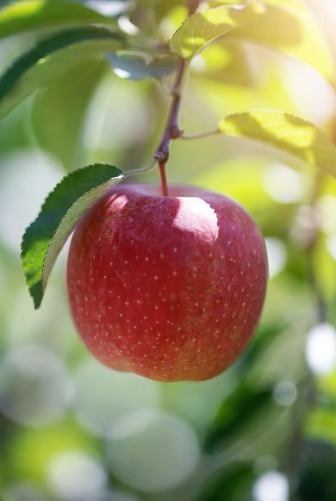
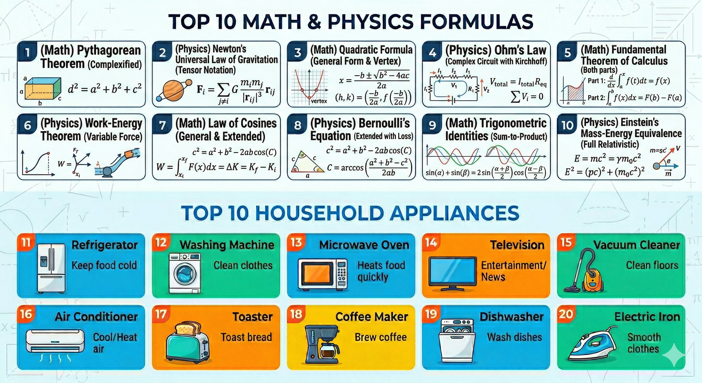

为什么背了忘、忘了背？科学告诉你答案。

请仔细观察这张图片
为什么我们一眼就能认出苹果，
却记不住叶子在哪一边？
这就是记忆的选择性加工——大脑只保留它认为「重要」的信息，其余的会被快速遗忘。
记忆是大脑的主动建构，而非被动录制。

先看上半部分 3 秒，再看下半部分 3 秒，然后自动进入下一页。
各位家长，刚才您记住了几个公式？又记住了几个电器？
这恰恰说明，艾宾浩斯遗忘曲线描述的是孤立、无意义的材料；而真实学习更像是联想记忆。
生活中常用的电器，能立刻和我们的经验、画面、用途连在一起，所以会比抽象公式更容易留下痕迹。
所以真正学习的记忆曲线，应该是下面这样。在笔记、错题或例题旁贴上便利贴
按以下节点复习，将知识锻造为长期记忆
方法：学完新知识后，在笔记旁贴一张便利贴，标记下次复习日期。每完成一轮就标注下一个节点。
间隔越来越长，因为每次复习都在加固神经连接，记忆越来越稳固。
上一次我们谈“未来即将到来”。这一次，我想和家长们一起确认一件事: AI 不是远方话题，它已经进入孩子们的学习、创造与协作现场。
如果把时间线拉直，会更容易理解今天的 AI 位置: 2017 年 Transformer 架构出现，2022 年 11 月 30 日 ChatGPT 让大模型能力爆发进入大众视野；到了 2026 年 2 月，OpenAI 最新一轮公开融资前估值已到 7300 亿美元。AI 不再只是技术新闻，而是资本、科研和教育同时加速的现实。
不只是“会聊天”。它已经在向三个方向同时前进: 更强的推理、更年轻的创造者、更接近现实世界的执行力。
17 岁高中生以一作身份参与 Kimi 团队，把 Ilya 的设想变成现实。简单说，他们把原本沿时间轴运作的机制“转了 90 度”，迁移到模型深度方向，做出了新的 Attention Residuals。这个案例最值得家长看到的，不只是天赋，而是年轻人已经可以真正进入前沿研究。
如果这一页你想先切进最贴近日常学习的系统，那就先讲错题助手。它不是替孩子直接给答案，而是把错题变成可追问、可反思、可再训练的入口。
这两张卡可以单独讲成“学习闭环的后两步”: 一张负责把课堂内容转成长时记忆，一张负责把抽象题意变成孩子更容易理解的图景。
根据老师上课录音，自动生成一份遵循 1 + 1 + 7 + 7 + 30 + 60 记忆节律的复习 PDF，把工作记忆系统性转化为长期记忆。
在所有备课课件里，让最新 AI 直接生成题目的可视化模型，把抽象题意转换成孩子更容易理解的图景、结构和动态关系。
将来的竞争力，不在于谁完全离开 AI，而在于谁更早学会把 AI 变成自己的第二个大脑、第二个研究员、第二个执行助手。
家长把孩子交给我们，不只是托付一段时间，更是托付一份期待。星润每一位老师的目标，都是让学生从根本得到进步，真正掌握学习的真谛。
每一份信任背后，都是一个家庭对孩子未来的期待。星润不仅要帮助学生提分，更要对得起这份托付，陪孩子建立长期向上的学习能力。
我们希望学生获得的，不只是某一道题的答案，而是更清晰的思考、更扎实的方法、更稳定的习惯，真正理解什么是学习，怎样把知识变成自己的能力。
星润老师自己也要保持终生学习、无限进步的劲头。因为只有老师始终向前，学生才会感受到成长的力量，并愿意把这种力量带进自己的人生。
未来不是某一天突然开始的。
未来，是孩子今天就能接触、尝试、协作和创造的东西。